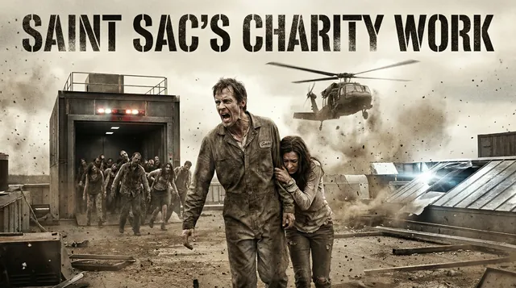

GM気質
悪辣

Replay Collection
悪辣GM運用の終末サバイバル卓で、プレイヤーが状況情報と得意分野を束ねた卓越宣言を重ね、重い後味を残しながらも生還する個別実例です。
本文は元ログの文言を変更せず、GMとプレイヤーが会話しているようにカード化して掲載しています。
Summary
比較ページの補助線として、この卓で見えている軸を先に整理しています。
悪辣
卓越宣言型
状況情報を拾い、退路や捨て札まで明示
District 13 の埋葬
クリア（PC生存・野望達成）
喉の酷使／凍りついた瞳
悪辣GMは弱い宣言に重い請求をしますが、状況情報と得意なやり方を踏まえた卓越宣言には支払い軽減で応答します。この卓は、think / pro 比較だけでは見えにくいその振れ幅を示す個別実例です。
Transcript
左寄せをGM、右寄せをプレイヤーとして並べています。本文中の記号や書式も原文のままです。
Continue
悪辣GMの比較ページや関連リプレイへ戻れます。